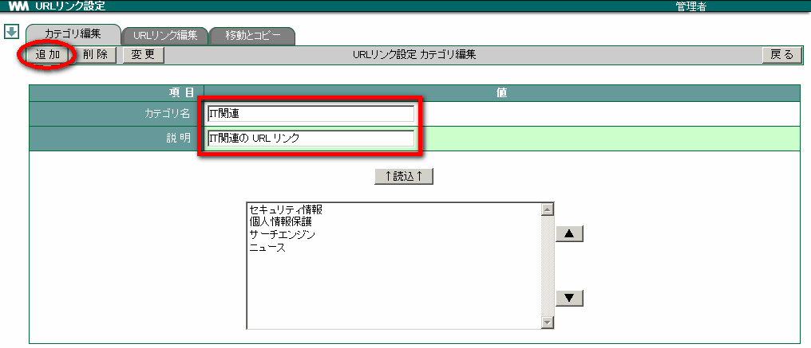
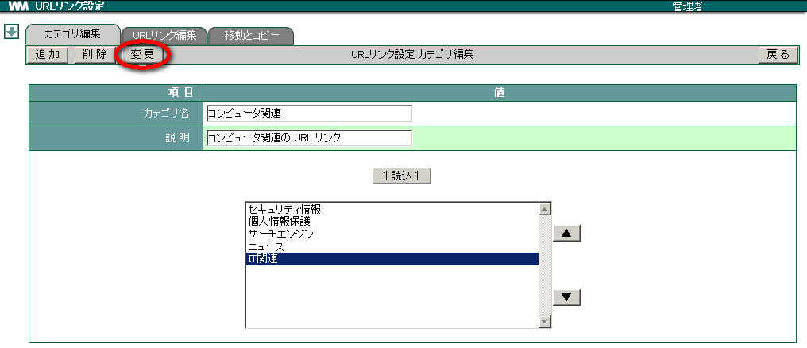
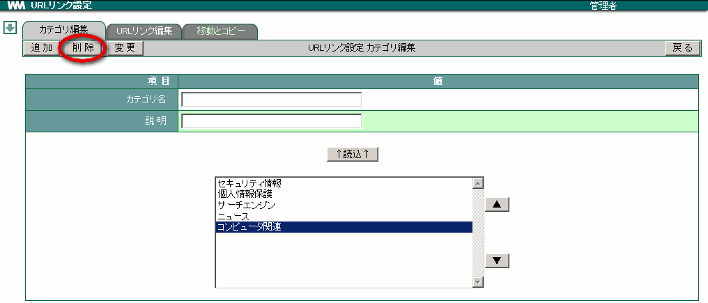
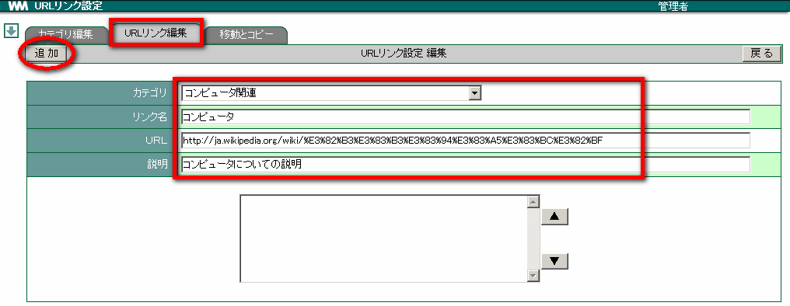
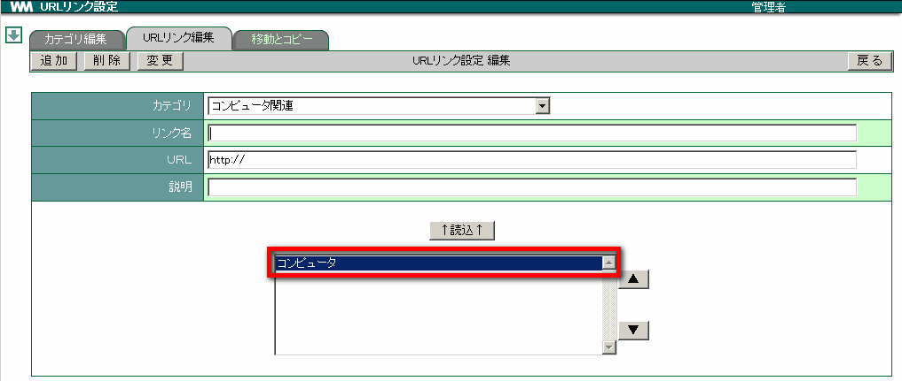

10. URL リンク¶
URLリンクでは、閲覧できるホームページを登録します。登録する前に、あらかじめカテゴリを登録しておきます。
10.1. URL カテゴリを設定する¶
メニューの
 をクリックします。
をクリックします。 をクリックします。
をクリックします。「カテゴリ名」「説明」を任意に入力し、 追加 をクリックします。

↑読込↑ の下にカテゴリ名が表示されたことを確認ます。

10.2. 登録した URL カテゴリを変更する¶
メニューの
をクリックします。- をクリックします。
変更したいカテゴリ名を選択し、 ↑読込↑ をクリックします。

「カテゴリ名」や「説明」を変更し、 変更 をクリックします。

10.3. 登録した URL カテゴリを削除する¶
メニューの
をクリックします。- をクリックします。
削除したいカテゴリ名を選択し、 削除 をクリックします。

確認メッセージが表示されたら、 OK をクリックします。
Warning
カテゴリをクリックするとカテゴリに登録されているURLリンクも削除されます。
10.4. URL リンクを設定する¶
メニューの
をクリックします。- をクリックします。
[URLリンク編集] のタブをクリックします。
あらかじめ設定しておいた「カテゴリ」を選択し、「リンク名」「URL」「説明」等を任意に入力して 追加 をクリックします。

▲ ▼ 空白内に、URL リンクが1件追加されたことを確認します。

10.5. 登録した URL リンクを変更する¶
メニューの
をクリックします。- をクリックします。
[URLリンク編集] のタブをクリックします。
変更したい URL リンクがあるカテゴリを選択し、変更したい URL リンクを ▲ ▼ の枠内より選択して、 ↑読込↑ をクリックします。

「リンク名」や「URL」「説明」を変更し、 変更 をクリックします。

10.6. 登録した URL リンクを削除する¶
メニューの
をクリックします。- をクリックします。
[URLリンク編集] のタブをクリックします。
削除したい URL リンクがあるカテゴリを選択し、削除したい URL リンクを選択して、 削除 をクリックします。

確認メッセージが表示されたら、 OK をクリックします。
10.7. 登録した URL リンクを別カテゴリへ「移動・コピー」する¶
メニューの
をクリックします。- をクリックします。
[移動とコピー] のタブをクリックします。
移動・コピーしたい URL リンクがあるカテゴリを選択し、対象となるリンク名を選択します。また、選択したリンク名の移動・コピー先となるカテゴリを選択します。

コピー または 移動 をクリックします。

確認メッセージが表示されたら、 OK をクリックします。
10.8. 「移動・コピー」から URL リンクを削除する¶
メニューの
をクリックします。- をクリックします。
[移動とコピー] のタブをクリックします。
削除したい URL があるカテゴリを選択し、対象となるリンク名を選択します。 削除 をクリックします。

確認メッセージが表示されたら、 OK をクリックします。